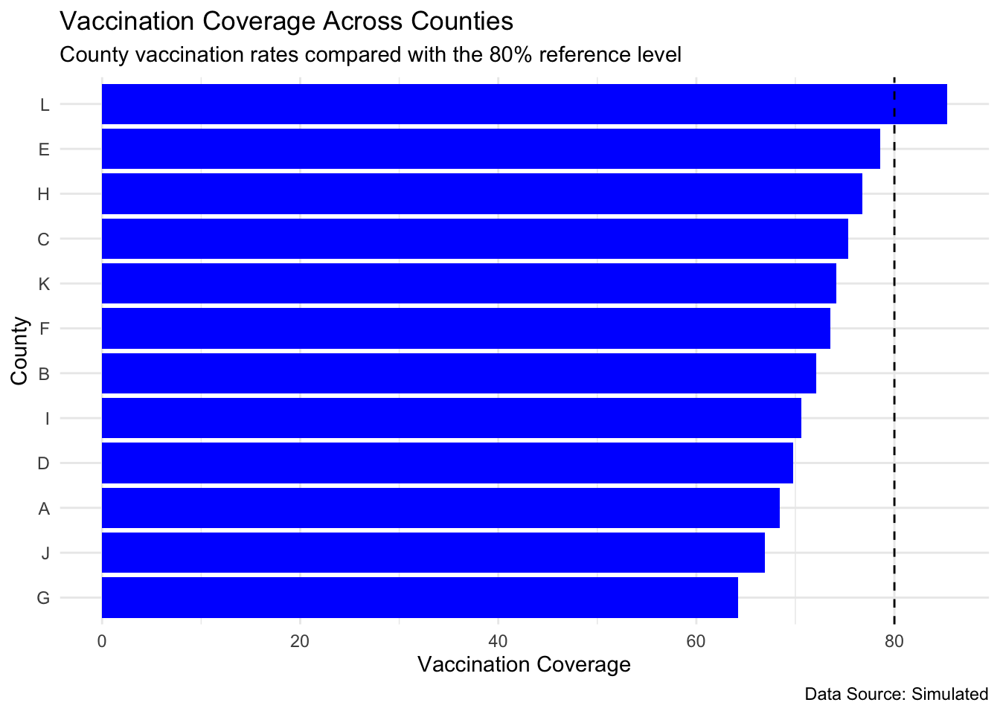
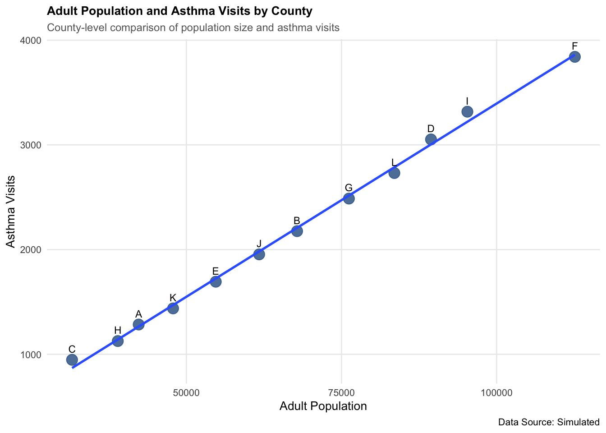

#install.packages('tidyverse')
library(tidyverse)
#install.packages('here')
library(here)
#install.packages('fs')
library(fs)
#install.packages('readr')
library(readr)
#install.packages('dplyr')
library(dplyr)Lab 1: Reproducible Data Visualization Workflow
Load Packages
Project Root
here()[1] "/Users/kmcdaniel/Desktop/DataVisualization"Answer:
What path was printed? “/Users/kmcdaniel/Desktop/DataVisualization”
Does it point to the correct course project? Yes
Why is working from an R Project preferable to manually setting the working directory? Easier and more efficient
Inspect the Folder Structure
dir_ls()lab_01_reproducible_visualization_workflow.qmd
lab_01_reproducible_visualization_workflow.rmarkdownCreate a Simulated Public Health Dataset
set.seed(716)
# Categorical Data
county_health_data <- tibble(
county = c("A", "B", "C", "D", "E", "F", "G", "H", "I", "J", "K", "L"),
region = c("North", "South", "Central", "Central", "North", "North", "South", "Central", "South", "South", "North", "Central"),
adult_population = c("42,315", "67,842", "31,576", "89,421", "54,738", "112,605", "76,193", "38,947", "95,284", "61,729", "47,856", "83,514" ),
asthma_visits = c( "1,284", "2,176", "947", "3,052", "1,693", "3,841", "2,487", "1,126", "3,317", "1,954", "1,438", "2,731"),
vaccination_rate = c("68.4", "72.1", "75.3", "69.8", "78.6", "73.5", "64.2", "76.8", "70.6", "66.9", "74.1", "85.3"),
asthma_visit_rate = c("30.35", "32.07", "29.99", "34.13", "30.93", "34.11", "32.64", "28.91", "34.81", "31.65", "30.05", "32.70")
) %>%
mutate(
adult_population = as.numeric(
gsub(",", "", adult_population)
),
asthma_visits = as.numeric(
gsub(",", "", asthma_visits)
),
vaccination_rate = as.numeric(
vaccination_rate),
asthma_visit_rate = as.numeric(
asthma_visit_rate)
)Save Dataset
write_csv(county_health_data, here("Data", "county_health_data.csv"))Remove and Re-Import the Dataset
rm(county_health_data)
county_health_data <- read_csv(
here("Data", "county_health_data.csv"))Inspect the Data
glimpse(county_health_data)Rows: 12
Columns: 6
$ county <chr> "A", "B", "C", "D", "E", "F", "G", "H", "I", "J", "K…
$ region <chr> "North", "South", "Central", "Central", "North", "No…
$ adult_population <dbl> 42315, 67842, 31576, 89421, 54738, 112605, 76193, 38…
$ asthma_visits <dbl> 1284, 2176, 947, 3052, 1693, 3841, 2487, 1126, 3317,…
$ vaccination_rate <dbl> 68.4, 72.1, 75.3, 69.8, 78.6, 73.5, 64.2, 76.8, 70.6…
$ asthma_visit_rate <dbl> 30.35, 32.07, 29.99, 34.13, 30.93, 34.11, 32.64, 28.…One Row Summary
county_number <- nrow(county_health_data)
# number of counties = 12
vr_mean <- mean(county_health_data$vaccination_rate)
# vaccination rate mean = 72.96667
avr_median <- median(county_health_data$asthma_visit_rate)
# asthma visit mean = 31.86
one_row <- data.frame(county_number, vr_mean, avr_median)
print(one_row) county_number vr_mean avr_median
1 12 72.96667 31.86Answer:
What does one row represent? One observation
How many variables are included? 3
Which variables are categorical? County
Which variables are numeric? Vaccination rates and Asthma visit rates
Which variable should be used to compare asthma burden fairly across counties? Asthma visit rate
Ranked Vaccination Bar Chart
vaccination_plot <- ggplot(
county_health_data,
aes(
x = reorder(
county, vaccination_rate
),
y = vaccination_rate
)
) +
geom_col(
fill= "blue"
) +
geom_hline(
yintercept = 80,
linetype = "dashed"
) +
labs(
title = "Vaccination Coverage Across Counties",
subtitle = "County vaccination rates compared with the 80% reference level",
x = "County",
y = "Vaccination Coverage",
caption = "Data Source: Simulated"
) +
theme_minimal()
vaccination_plot
Interpret the Figure
- What pattern does the figure show?
- Which counties appear furthest below the target?
- What context would be required before using this graph for a real decision?
The figure shows that vaccination coverage varies across counties, with rates ranging from about 64% to 85%. Most counties are below the 80% target, while only County L exceeds it. Context, such as available resources, access to care, socioeconomic makeup, type of area, and other community factors, should be considered.
Save the Vaccination Figure
ggsave(
filename = "../Figures/lab01_vaccination_coverage.png",
vaccination_plot,
width = 8,
height = 6,
dpi = 300
)Independent Visualization
- Scatterplot of adult population and asthma visits
independent_plot <- ggplot(
county_health_data,
aes(
x = adult_population,
y = asthma_visits
)
) +
geom_point(
color = "#2b5c8f",
size = 4,
alpha = 0.8
) +
geom_smooth(
method = "lm",
se = FALSE
) +
geom_text(
aes(
label = county),
vjust = -1,
size = 3
) +
labs(
title = "Adult Population and Asthma Visits by County",
subtitle = "County-level comparison of population size and asthma visits",
x = "Adult Population",
y = "Asthma Visits",
caption = "Data Source: Simulated"
) +
theme_minimal(
base_size = 10
) +
theme(
plot.title = element_text(
face = "bold",
size = 10
),
plot.subtitle = element_text(
color = "grey40",
margin = margin(b = 5),
size = 9
),
panel.grid.minor = element_blank()
)
independent_plot
Save the Independent Figure
ggsave(
filename = "../Figures/lab01_independent_visualization.png",
independent_plot,
width = 8,
height = 5,
dpi = 300
)Reflection Questions
Answer each question in complete sentences.
Question 1
Why is reproducibility important in public health research and practice?
Reproducibility is important in public health research and practice, because all information readily provided to the general public should be accruate, transparent, and usable. It allows others to verify the results and understand how conclusions were reached.
Question 2
How does a consistent project structure improve collaboration and review?
When a project structure is consistent, it allows collaborators and reviewers to easily understand the information. It makes it easier to work together and reproduce the analysis.
Question 3
Why are relative paths preferable to absolute paths?
Relative paths are preferable to absolute paths, because they allow a project to work on different computers without changing the file path. This makes a project more portable and reproducible.
Question 4
How does GitHub contribute to reproducibility?
GitHub allows for version control, which keeps the work done in R-studio up to date for other people to use and reference. This allows for people to reproduce a project with the exact tools used for the original project.
Question 5
What was the most challenging part of the lab?
The most challenging part of the lab was setting the directory and making sure if something was pulled, the code actually ran.